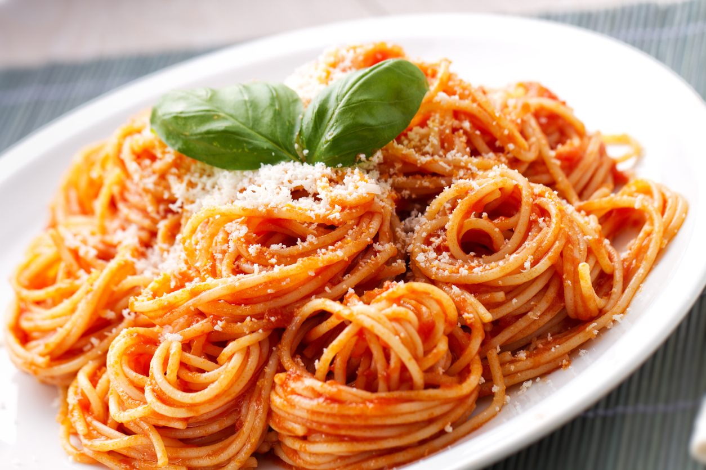

Spaghetti

Recipe:
Ingredients (6 servings):
- 1 package of 500 g Barilla spaghetti nº 3
- 1 tray of cherry tomatoes
- 1 whole head of garlic
- Quality olive oil (enough to cover the bottom of the pan)
- Chopped olives (optional)
- Salt and black pepper to taste
- 1 bunch of fresh basil
- A dash of oil
- 50 g of grated Parmesan cheese
Instructions:
- Wash the cherry tomatoes, basil, and olives (if using).
- Slice the olives into small rounds and halve the cherry tomatoes; set aside.
- Boil 2 liters of water in a large pot.
- Add a tablespoon of salt and a dash of oil to the boiling water to prevent the pasta from sticking.
- While the water is boiling, microwave the whole head of garlic for 30 seconds (this helps peel the cloves more easily).
- Tip: Be careful when removing the garlic from the microwave, it will be hot. Wait a few seconds and make a small cut on the skin of each garlic clove; the skin will come off easily, saving time.
- Chop the garlic and set aside.
- Cook the spaghetti in the boiling water for approximately 5 minutes to be al dente (cook for 7 minutes if you prefer it more done).
- While the spaghetti cooks, heat a large frying pan.
- Add the olive oil and garlic to the pan for about 2 minutes (do not let the garlic brown as it will make the dish bitter).
- Add the cherry tomatoes and olives, and sauté for 2 minutes.
- Season with salt and pepper to taste.
- Drain the pasta and add it to the frying pan.
- Add the basil leaves and grated cheese.
- Stir for 2 minutes to absorb the flavors and serve hot.
Ready to serve!
Back